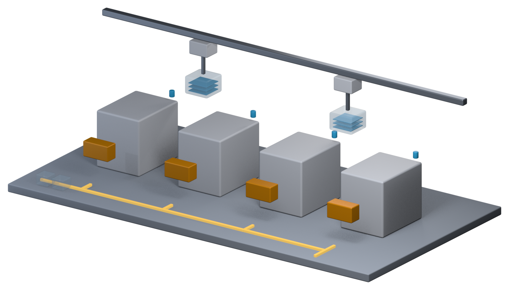

Part 6 · 走出晶圆厂
工厂如何被系统管理
数千批晶圆同时在生产，每批几百道工序，上千台设备 24 小时不停。这种复杂度不可能靠人记住——所以每一个动作都由系统指挥和记录，像塔台加物流中心。
进站防呆演练
七套系统
📍 前一站 跟着晶圆走完了整趟旅程→本章 从系统的角度重新看一次工厂→下一站 芯片出货后，工艺如何影响固件
01七套系统，各管一段
| 系统 | 负责什么 | 比喻 |
|---|---|---|
| MES | 记录每批晶圆在哪、下一步是什么，控制进出站 | 大脑与账本 |
| 设备自动化 EAP | 连接设备与 MES，下载 Recipe、启动工艺、收数据 | 翻译员 |
| 物料搬运 AMHS | 指挥天车与仓储，把晶圆盒送到位 | 物流中心 |
| 派工 Dispatcher | 决定每台设备下一批做哪一批 | 交通信号灯 |
| Recipe 管理 | 管理每台设备的 Recipe 与版本 | 食谱数据库 |
| 工艺控制 SPC/FDC/R2R | 监控与控制工艺质量 | 质量控制员 |
| 良率分析 | 整合工艺与测试数据，分析良率 | 侦探 |
设备说的是同一种语言：设备来自世界各地，靠 SECS/GEM 标准通信，系统才能用同一套方式和每台设备对话。
02进站：五道闸门
一批晶圆到达设备门口时，系统要连问五个问题。把任意一项切成「异常」，再点进站，看它怎么被挡下来。
人会疲倦、会分心，系统不会：这些规则以前靠人工核对，现在写成代码，每一次都自动检查。所谓防呆，就是让错误「无法发生」，而不是事后抓出来。
03一次进站，六条消息
系统上的状态必须和实物一致。系统说「已出站」但晶圆其实没做完，就是「账实不符」，必须立刻处理。
04每一条规则背后，通常都有一次事故
防呆规则不是凭空写的。Q-Time 超时被挡、铜区晶圆盒不能进前段——都是有人真的犯过这个错，才变成系统规则。
例外要走流程：急件想跳过某个检查，必须正式申请、核准、留记录，事后还要检讨规则本身。不然「防呆」几周就被绕光了。
＋履历：每一片晶圆的完整记录
系统会为每一片晶圆留下完整履历：经过哪些步骤、用了哪台设备与腔体、哪个 Recipe 版本、什么时间、量测结果是多少。
这份记录是整座工厂的记忆：良率异常时做共因分析、设备出问题时界定影响范围、客户端回报时从一颗芯片一路追回它的晶圆与批次——都靠它。
053D 场景：谁决定晶圆去哪一站
四台设备排成一排，头顶的天车把 FOUP 从一站搬到下一站。地面上那条发光的折线不是画上去的装饰——它是系统算出来的路线。

这张图想说明的事：「晶圆走错一站」在纸面上是个流程错误，在厂房里是一次真实的搬运。所以系统要在每次搬运前确认目的地，而不是搬到了才发现错了。
＋原文里的名词与现场经验
以下内容逐条取自原书，保留「定义 / 现场用法 / 常见混淆」与「情境 / 做法 / 为什么」的原始结构。
名词MES（Manufacturing Execution System，制造执行系统）
- 定义
- 管理生产现场的核心系统，记录每批晶圆的位置、状态与历程，并控制晶圆能不能进入下一个步骤。
- 现场用法
- 「MES 上这批显示 Hold，要先查原因。」
- 相关名词
- Track-in、Track-out、Route、Hold、派工
- 常见混淆
- MES 不等于工厂的所有系统。它是核心，但设备连接、搬运、派工、工艺控制通常由其他系统负责，彼此互相配合。
名词进站与出站（Track-in / Track-out）
- 定义
- 进站是晶圆开始在某一站加工时，在系统上的登记；出站是完成加工后的登记，并把晶圆推进到下一个步骤。
- 现场用法
- 「这批进站之后设备就 Down 了，要处理一下帐。」
- 相关名词
- MES、Route、履历
- 常见混淆
- 系统上的状态和实物晶圆必须一致。系统显示已出站、但晶圆其实还没做完，就是现场说的「账实不符」，必须立即处理。
Know-how每一条防呆规则背后，通常都有一次事故
- 情境
- 急件赶着出货，有人希望暂时跳过某个系统检查。
- 做法
- 例外处理必须经过正式的申请和核准，并且留下记录，事后也要检讨规则是否需要调整。
- 为什么
- 很多规则都是从过去的事故学来的。规则看起来麻烦，往往是因为它挡下的错误很少再发生，大家已经忘了它为什么存在。
- 没做会怎样
- 同样的事故再次发生，而且因为规则被跳过，事后也很难追查。
- 相关章节
- 第 18 章 异常处理与工程变更
Know-how系统停摆，工厂就停摆
- 情境
- MES 突然宕机。
- 做法
- 核心系统采用冗余备份架构，系统的修改要经过完整测试，并安排在影响最小的时段上线；工厂也会事先准备系统停摆时的应急程序。
- 为什么
- 晶圆的每一次进出站都要经过系统，系统一停，设备就算正常也无法继续生产。
- 没做会怎样
- 整座工厂停线，正在等待的晶圆还可能因为超过 Q-Time 而需要返工或报废。
- 相关章节
- 第 9 章 清洗与污染控制
＋延伸阅读
- Heiko Meyer、Franz Fuchs、Klaus Thiel，《Manufacturing Execution Systems: Optimal Design, Planning, and Deployment》
- Wallace J. Hopp、Mark L. Spearman，《Factory Physics》
- SEMI 的设备通信相关标准（SECS/GEM）
本章重点
- 晶圆厂的复杂度靠系统而非人来管理。
- MES 是核心，EAP、AMHS、派工、Recipe、SPC、良率分析各管一段。
- 进站要过五道检查：站点、设备资格、状态、Hold/Q-Time、污染等级。
- 进出站记录构成晶圆履历，也是事后追查的基础。
- 防呆让错误无法发生；例外必须留痕。